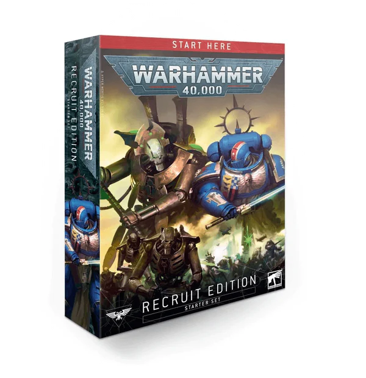

Warhammer 40K Recruit Edition
€40,00
inclusief BTW
Omschrijving
Ontworpen om perfect te zijn voor nieuwe spelers die Warhammer 40.000 nog nooit hebben geprobeerd, is de Recruit-editie de ideale manier om je tenen onder te dompelen in de spannende wereld van gevechten in het 41e millennium. Of je nu Warhammer 40.000 wilt proberen, op zoek bent naar het perfecte cadeau voor een nieuwsgierige vriend, kind of familielid of gewoon zin hebt om je Space Marines- en Necrons-legers te versterken, deze set is voor jou! Verzamel je set, bouw je modellen en ontdek hoe je moet spelen in een reeks startmissies die het leren van het spel leuk maken. Als je klaar bent, is het eenvoudig om je set uit te breiden met de Elite of Command Edition!
Eigenschappen
- 20 plastic miniaturen met push-fit, alleen een tondeuse nodig om te monteren (we raden Citadel Starter Set Clippers of Citadel Fine Detail Cutters aan - niet inbegrepen) - geen lijm, geen rommel, inclusief:
- 1x Royal Warden: een onwankelbaar loyale voogd, de Royal Warden is de handhaver van de wil van zijn Overlord. Het model wordt geleverd met een Citadel 32 mm ronde basis.
- 10x Necron Warriors: de steunpilaar van de Necron-phalanxen, deze tweevoetige krijgers vernietigen hun prooi met meedogenloze salvo's van verstuivende gauss-wapens. Elk model wordt geleverd met een Citadel 32 mm ronde basis en heeft een keuze uit hoofden en wapens.
- 3x Canoptek Scarab Swarms: Vliegende hordes van deze insectenmachines kauwen ongestraft door pantser, vlees en botten. Elke zwerm wordt geleverd met een Citadel 40 mm ronde basis.
- 1x Primaris-luitenant: een ervaren bedrijfsofficier, een luitenant heeft de taak zijn kapitein bij te staan in elk aspect van zijn taken en zijn broeders op het slagveld te leiden. Het model wordt geleverd met een Citadel 40 mm ronde basis.
- 5x Assault Intercessors: dit team van agressieve strijders verscheurt hun vijanden in melee met het oogsten van zwaaien van hun schurende kettingzwaarden. Elk model wordt geleverd met een Citadel 32 mm ronde basis.
- De Warhammer 40.000: Recruit Manual is uw 64 pagina's tellende gids voor de strijd in het 41e millennium. Het bevat een overzicht van de Warhammer-hobby, achtergrond voor je nieuwe modellen en een stapsgewijze handleiding voor het bouwen en vechten met je troepen, inclusief alle regels die je nodig hebt voor je eerste games.
- Een zwaargewicht papieren gamingmat, plus een glanzend afgewerkt kartonnen dienblad dat kan worden gebruikt als decor voor je eerste gevechten - transformeer elke keukentafel in een passend grimmig, donker oorlogslandschap! De mat toont ook verschillende markeringen met letters die zijn ontworpen om naast de missies in de rekruteringshandleiding te werken.
- Range linialen en dobbelstenen - de essentiële accessoires die je nodig hebt om te gamen.
- Gegevensbladen – met regels voor alle modellen in de set, plus een set uitbreidingsopties voor als je wilt uitbreiden met nieuwe kits.
- Een Space Marines-overdrachtsblad met meer dan 600 transfers, ontworpen om het toevoegen van hoofdstukspecifieke details, squadroninsignes, kill-markeringen en eenvoudiger te maken - perfect voor als je een laatste hand wilt leggen aan je geverfde modellen!